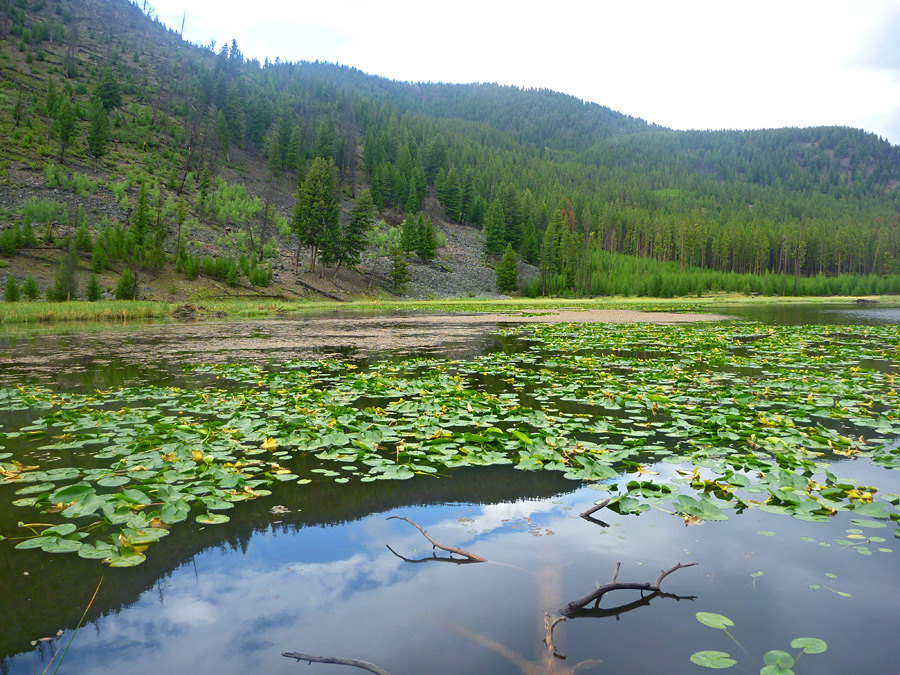

Harlequin Lake Trail Length: 0.48 km, one way. This is a short, enjoyable hike for campers staying at Madison Campground. The trail wanders through lodgepole pine that burned in the 1988 fires to a IO-acre lake that is rimmed with cattails, rushes and yellow pond-lily pads. Harlequin Lake was known as "Secret Lake" during the late 1940s and 50s because of its secluded location near the road. At that time, trumpeter swans were frequent nesters at the lake but in 1958, the lake was named after the colorful duck. On the northern edge is a beaver lodge, and elk frequent this lake in the early summer and fall as well. But the lake itself is considered barren of fish. It is between 1 and 3 m deep, and most of the lake freezes during winter.
Code HLTRP
Elevation change: Trailhead at 2069 m (36 m elevation).
Trailhead: Located on the north side of the West Entrance Road, 3 km west of Madison Junction. The trailhead is not well-marked, but on the opposite side of the road is a visitor turnout that overlooks the Madison River.